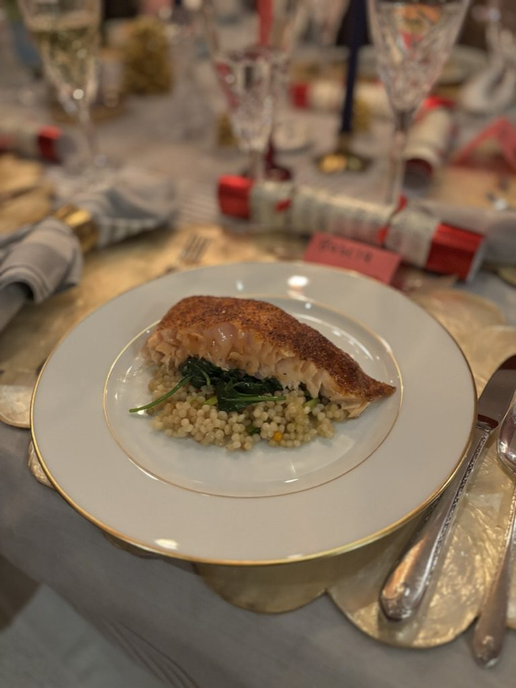
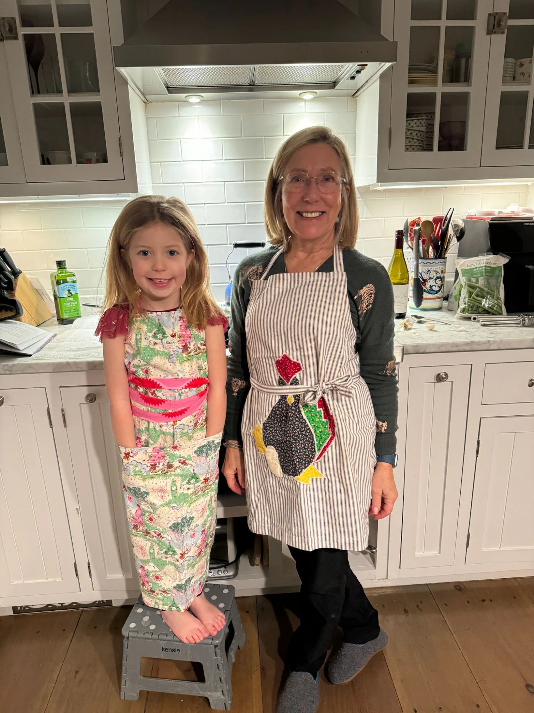
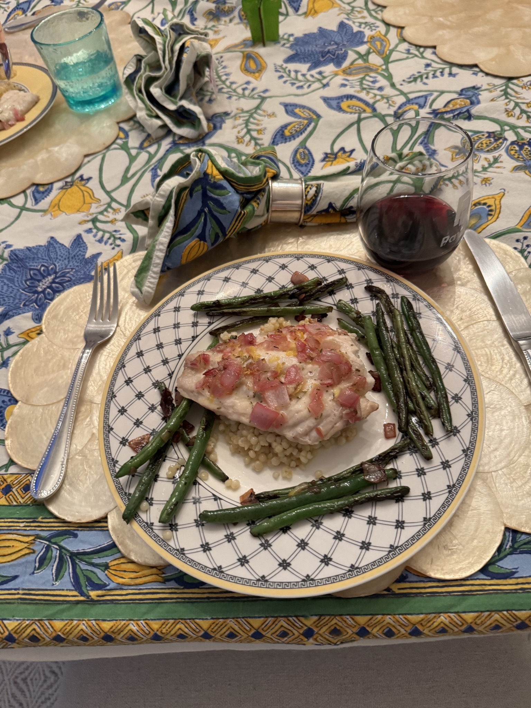
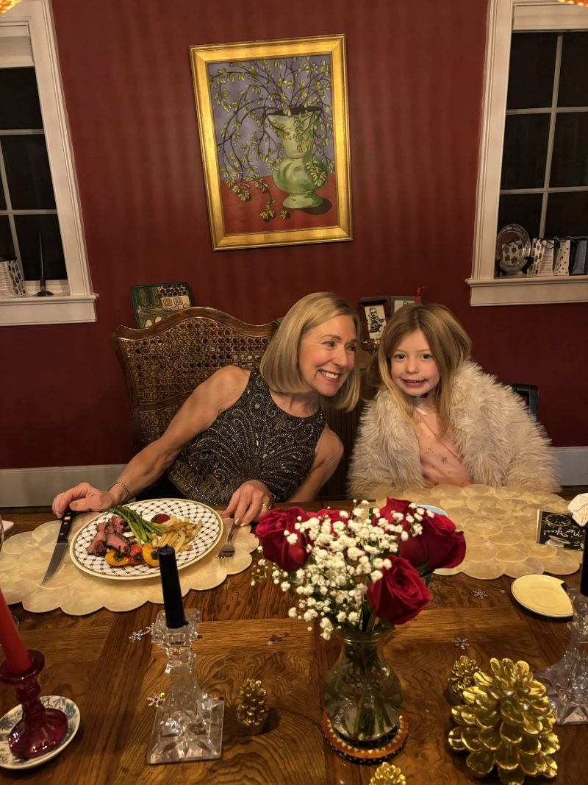
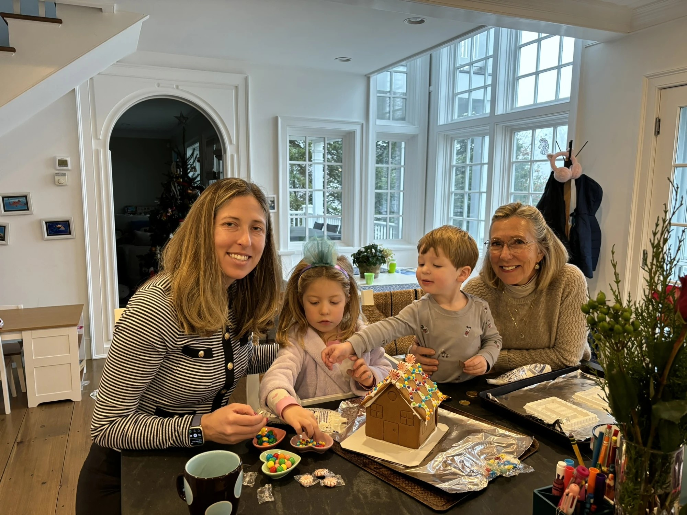
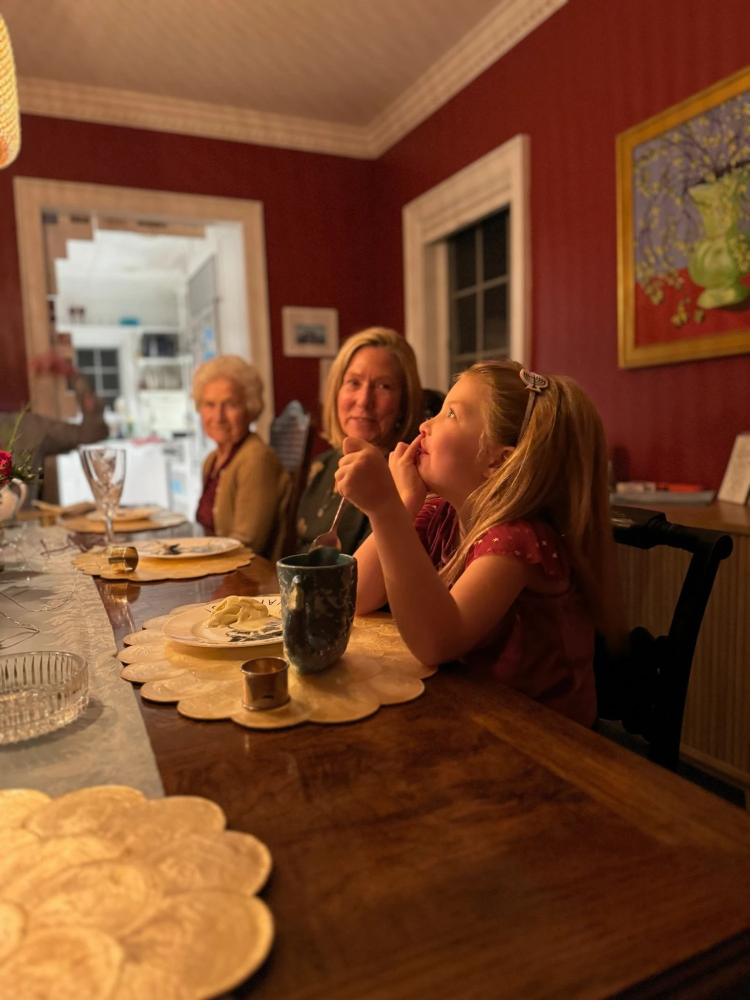
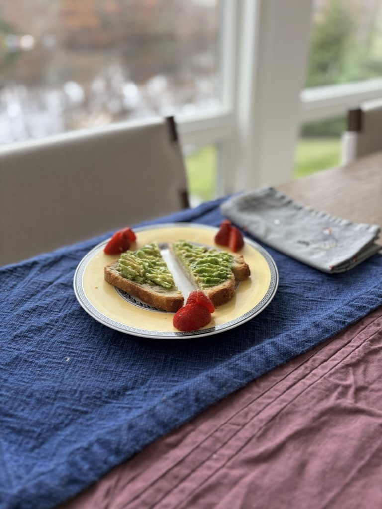
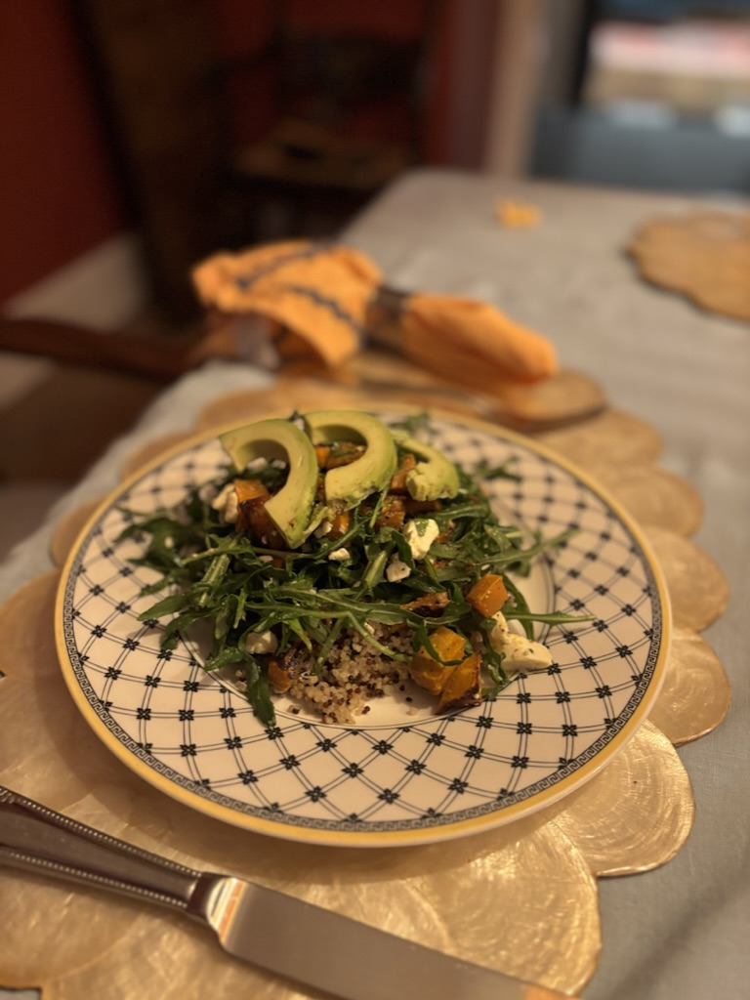
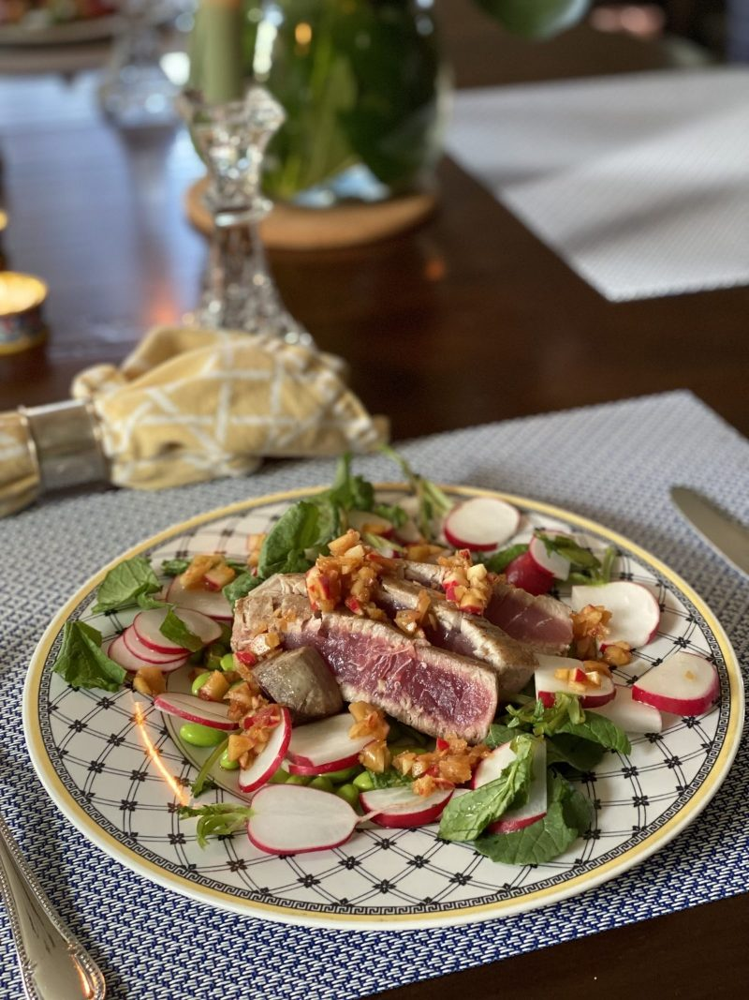

Judy's Brown Sugar-Rubbed Salmon
34Brown sugar-rubbed and seared to a crackle over pearl couscous & garlicky wilted greens.
Elevated home cooking, served the way Doreen always meant it — generous, unhurried, and just a little bit fussy. Good plates, better company.
What did she cook for you? A few sentences is plenty.

tonight's catch







Her name was Doreen. To her, cooking was never a chore — it was how she brought people together. A flank steak soaked in Bordeaux, snapper with salsa verde, green beans blistered with orange zest — often something she'd found in the Times and quietly made her own. Every meal was a chance to take her guests somewhere new, to turn an ordinary evening into shared joy. She never wasted an opportunity to connect people over a good plate of food, and never once let on that she was teaching.
Her student was reluctant, and slow. For years he'd have rather gone out to eat. But she was patient — turning up in kitchen after kitchen, “just whipping something up,” folding her lessons in so gently that they only surfaced later, when the family needed them most. By the time the food turned genuinely good, we were joking she'd have to open Mother-in-Law's.
We never built the restaurant. We never needed to — it was wherever she stood. Her inspiration reaches further than she ever knew: now, any given Sunday, it's her recipes on the table and her way of feeding people in every dish. This is us carrying it forward — comfort food dressed for company, made from good ingredients and a little bit of stubbornness.